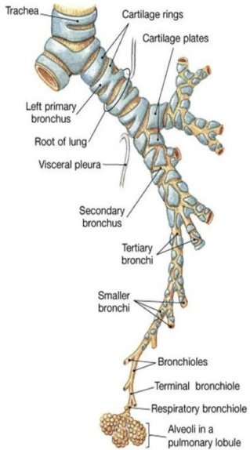

La pneumopathie interstitielle diffuse
Definition
On regroupe sous le terme de pneumopathies interstitielles diffuses de nombreuses pathologies qui se caracterisent par une atteinte de la paroi alveolaire qui peut evoluer vers la fibrose.

Etiologies
Prise de medicaments souvent chronique et oubliee par le malade.
Exposition professionnelle : amiante, silice.
Exposition a un antigene inhale : foin moisi, climatiseur.
Toxicomanie.
Voyages.
Animaux.
Immunodepression.
Signes cliniques
Signes respiratoires :
Dyspnee d'effort puis de repos.
toux, principal sympteme.
Douleur thoracique en cas d’atteinte pleurale associee.
Hemoptysie.
Dyspnee sifflements asthmatiformes.
Signes extra respiratoires orientent le diagnostic etiologique :
Sarcoedose, connectivites, vascularites.
Amaigrissement, fatigue, fievre.
Examens complementaires
Examen ophtalmologique.
Radio pulmonaire.
Bilan biologique : NFS, ionogramme, creatinine, bilan hepatique, recherche d'anticorps.
Fibroscopie pulmonaire : examen de la muqueuse, lavage broncho-alveolaire, biopsie.
Voir aussi :
Oygenotherapie
L'appareil respiratoire
Module Pneumologie